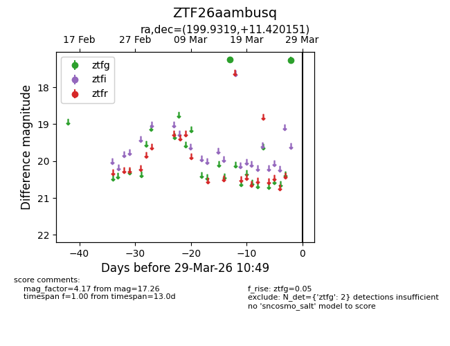
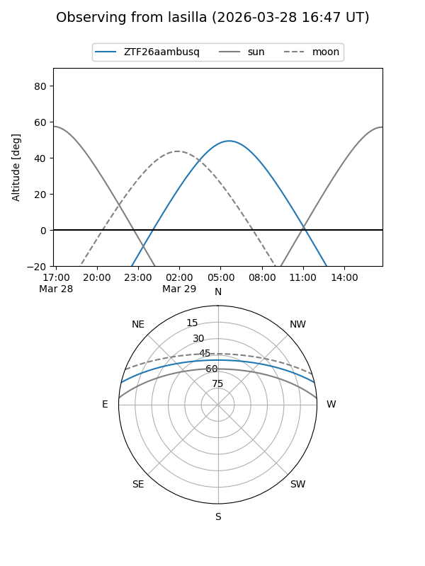
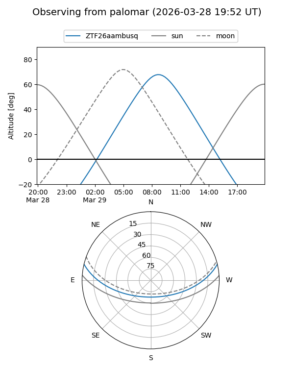

ZTF26aambusq
Target ZTF26aambusq at 2026-03-29 10:52
Aliases and brokers:
FINK: link
Lasair: link
ALeRCE: link
alt names
ZTF26aambusq (ztf,fink_ztf)
Coordinates:
equatorial (ra, dec) = 199.9319,+11.42015
equatorial (HMS+DMS) = 13:19:43.66,+11:25:12.55
galactic (l, b) = (327.2283,+72.94348)
Flags:
Photometry:
last ztfg=17.26
2 ztfg detections
Lightcurve

Visibility


Additional plots